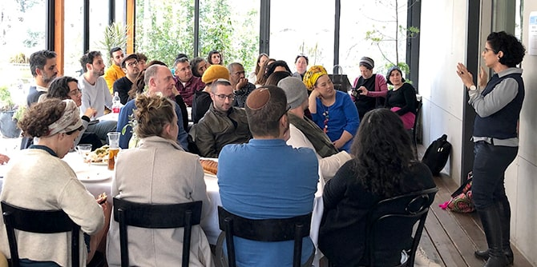
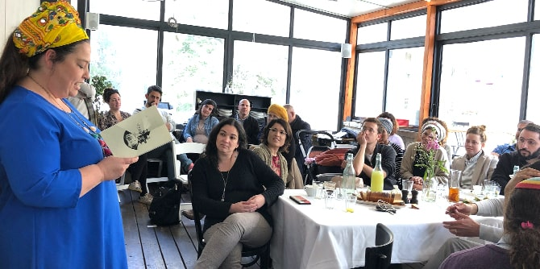

The Mandel Program for Leadership in Jewish Culture is currently in its third year of operation. One of the program's main goals this year is to create an active and entrepreneurial network of its fellows and graduates, which will drive trans-sectorial innovations and collaborations in Israeli society. On Monday, February 24, a day-long event for the first three cohorts of the program launched this network. This event brought together professionals engaged in the arts, community work, education, and the media, who hail from a variety of social sectors and are all involved in promoting Jewish culture in Israeli society and in strengthening and enriching Jewish life in Israel.
The event began with a presentation by
Yael Hess, director of the Mandel Leadership Institute, in which she reviewed recent changes and innovations at the Institute and the expansion of the Mandel Foundation–Israel's work with graduates.

Mishael Zion, director of the Mandel Program for Leadership in Jewish Culture, stressed the importance of fostering connections in an age of division and introversion. “Culture is created by encounters between different groups," he said. "Creativity and innovation are born by importing ideas and realities from one space to another. This graduate network provides a unique opportunity for exchanging ideas, for sharing different perspectives on how to read our realities, and for forging links that transcend boundaries between professional and theoretical areas.”
This desire to create new connections and to create a network of cultural leaders found expression in an exercise called “Closing the Triangle,” in which the network members were asked to identify two people in the group who do not know one another, but who would enrich Israeli culture if they were to meet, and to introduce them. The room was immediately transformed into a bustling culture factory, swelling with the sounds of encounters between different people, professions, fields, and identities, of dialogues forming, and of the intricate weave of culture being woven stronger and stronger.

After their discussions in groups of three, the participants moved into four professional circles facilitated by fellows and graduates of the program, and discussed the challenges and opportunities offered by different areas of the field of Jewish culture in Israel. The professional groups focused on the following:
Women’s singing and religious sensitivities: Proposals for a solution – This group was headed by Livnat Ben-Hamou, senior broadcaster at the IDF's Galgalatz radio station; Chen Artzi Sror, a journalist for Yediot Aharonot; and Omer Ben Rubi, an editor and broadcaster for the Kan radio station. It discussed different possibilities for solving the issue of women’s marginalization in Israeli society. The discussion in this group linked halakhic discourse with questions of feminism, as related to the extent to which women are heard in the media in Israel.
Israeli and Jewish art: A current picture – This circle was led by Ronen Izhaki, director of Between Heaven and Earth, a non-profit organization devoted to dance; Leor Grady, a multidisciplinary artist who lectures at the Minshar School of Art; and Porat Salomon, artist and founder of the Pardes School of Art. It discussed "Jewish art," and focused on the nexus between the two components of this concept. A lively debate about the link between "Jewish" and "art" centered on a discussion about the body in Judaism, as well as its representations, characteristics, and implications.
Leadership in culture and art: Management, growth, and development – This group was led by Rachel Keshet, founder of Rachel Keshet Theater; Rachel Gets Salomon of Ha’aretz, and Orly Portal, dance artist and founder of the Orly Portal Dance Troupe. It focused on issues related to artistic direction. We are all familiar with the challenge of the work-life balance, but artists have an additional tension at the heart of their work: the balance between creativity and management. The members of this group discussed ways to manage professional relationships on the axis of artist and artistic director.
Jewish renewal and community renewal – This circle was led by Heli Bareket Tabibi, one of the leaders of Rashut Ha’Rabim – The Jerusalem Forum of Jewish Renaissance Organizations; Mor Shimonie, alumni coordinator for BINA: The Jewish Movement for Social Change; and Oded Mazor, rabbi of Kehilat Kol HaNeshama in Jerusalem. It explored issues related to “community" and "community activity.” The members of this group each spoke about the initiatives that they head and the challenges that they face in the field. The group discussed the similarities and differences found in the management of different kinds of communities – virtual, real-world, synagogues, and others.
The event closed with an up-to-the-minute cultural event: a pre-release screening of Keren Yedaya’s new movie Red Fields, a cinematic adaptation of the Israeli rock opera Mami, which was followed by a discussion. Three members of the network who are involved in cinema shared their perspectives, triggering a lively debate of ethnic, class, and social issues that characterize work in the realm of culture in Israel, and of the very different approaches taken by the fellows and graduates who make up the network.
Throughout the day, the various discussions and circles repeatedly raised one of the main questions asked at the Mandel Leadership Institute: “What is going on in the field? What is considered state of the art in Israel and around the world?” This gathering of members of the Jewish culture network, who are themselves leaders and entrepreneurs in a wide and diverse range of fields, facilitated the creation of a broad and up-to-date picture of Jewish and Israeli culture, and sparked thoughts about new possibilities.
{kind=link}
{kind=link}
{kind=link}